Media Studio — Workspace: el paso como panel de trabajo
Lavada de cara estructural del pipeline: cada paso pasa de "islas sueltas sobre el fondo" a UN panel de trabajo (cabecera / cuerpo / pie anclado + línea de estado). Opus implementó, Fable especificó · 2026-07-10
0 Qué se hizo, de un vistazo
El dueño, con captura en mano: "¿te parece una interfaz profesional? ese botón abajo suelto, sin layout simétrico, sin información de contexto… son como 4 o 5 aplicaciones que se unieron, retazos. No es elástico, no es una aplicación." El diagnóstico: las pantallas del pipeline no tenían MARCO — título, acciones, contenido, CTA y copiloto eran islas sueltas sobre el fondo. Con poco contenido quedaba un agujero en el medio y el CTA flotaba a media página. Lo arregla UN cambio de arquitectura visual: el PANEL.
Work orders
3
W1 el panel en PasoShell + línea de estado · W2 migrar los retazos (Montaje/Rodaje/Render + Negocio + Wizard) · W3 responsive + gate visual
Helper puro nuevo
estadoDelPaso
src/lib/pasoEstado.ts — una frase de contexto por paso, derivada del estado REAL. +21 tests.
Tests
240 / 240
219 previos intactos + 21 del helper. Cero lógica/persistencia/endpoints tocados.
La idea (una sola): todo paso vive dentro de UN panel — superficie --st-bg-1, borde, radio, sombra; min-height: min(60vh,720px) y flex column → el pie queda SIEMPRE anclado abajo (margin-top:auto), con la línea de estado a la izquierda y el CTA a la derecha. El fondo de la página es la MESA; los paneles son las hojas de trabajo. El copiloto es el panel HERMANO (misma receta de superficie).
1 Antes / después — el botón suelto ahora vive en el pie W1
Mismo paso (Pack Flow · munify-ejemplo · estado persistido), misma data. Antes: el contenido flotaba sobre el fondo y el CTA de aprobar quedaba suelto. Después: todo dentro del panel; el pie ancla la línea de estado 0/4 copiados · 0 importados a la izquierda y "Pack listo, al rodaje" a la derecha.
ANTES · sin marco · contenido sobre el fondo
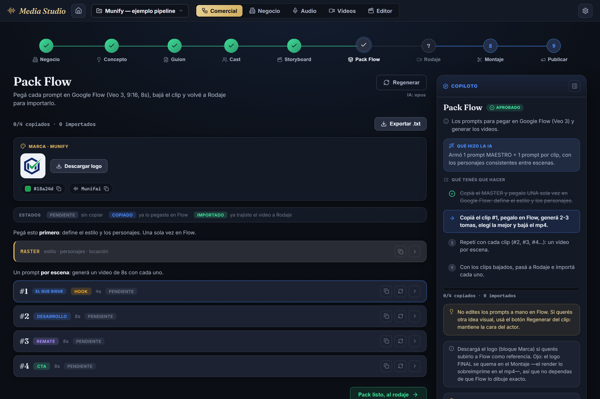
DESPUÉS · panel con pie anclado (estado + CTA)
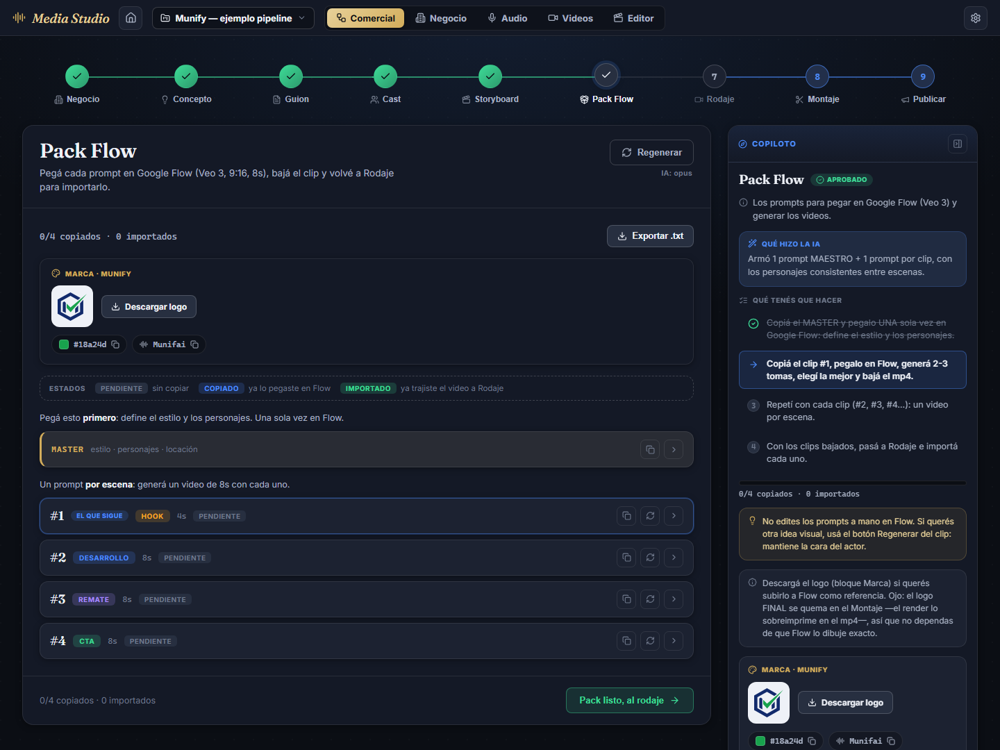
2 El panel: cabecera / cuerpo / pie anclado W1
Caso de aceptación: Concepto con 1 tarjeta elegida. El CTA "Concepto listo, al guion" está DENTRO del pie, pegado abajo a la derecha; la línea de estado dice 1 propuesta · elegiste una; nada del paso queda fuera del panel; la tarjeta única tiene ancho de ficha (no "fideo"); el copiloto queda alineado arriba con el panel.
Concepto · 1 tarjeta elegida · 1440px · CTA anclado + línea de estado + copiloto hermano
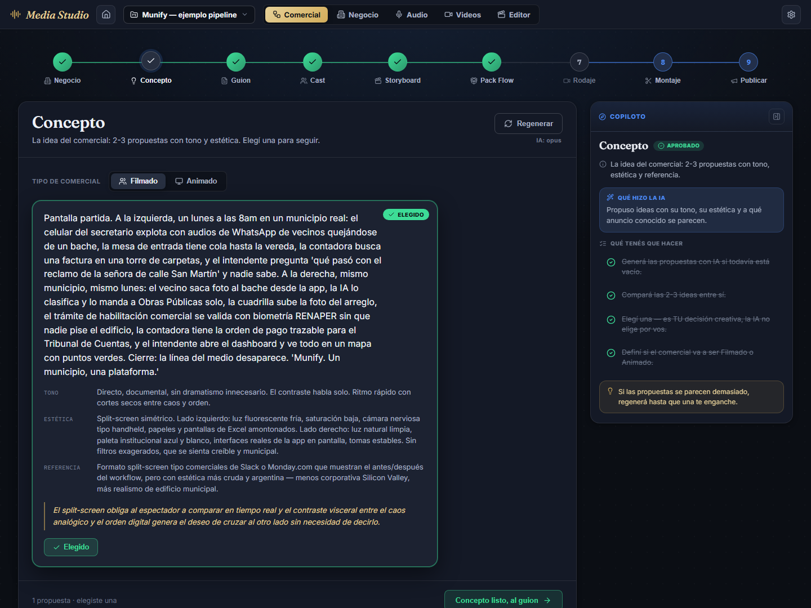
Y con poco contenido no hay agujero: el empty state se centra dentro del cuerpo del panel y el pie sigue anclado abajo (no una página vacía con el botón a media altura).
Concepto VACÍO · 1440px · empty centrado en el cuerpo, pie anclado
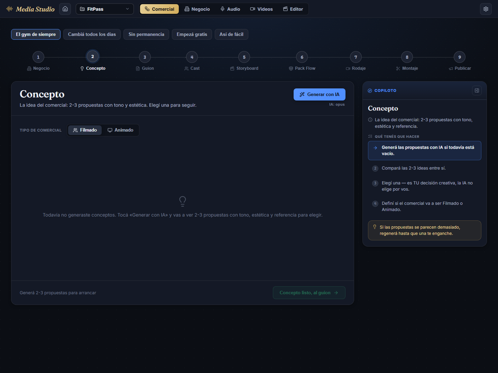
3 Los "retazos de otra aplicación" entran al mismo sistema W2
Cuatro pantallas estaban fuera del sistema. Ahora comparten el MISMO panel. El caso más flagrante era Negocio: usaba colores hex crudos (literalmente "otra app"); ahora es panel + tokens --st-*, con el brief, la marca y las pantallas dentro del cuerpo y el pie Brief de N caracteres · M pantallas.
Wizard de campaña · de "suelto en pantalla gigante" a panel compacto centrado
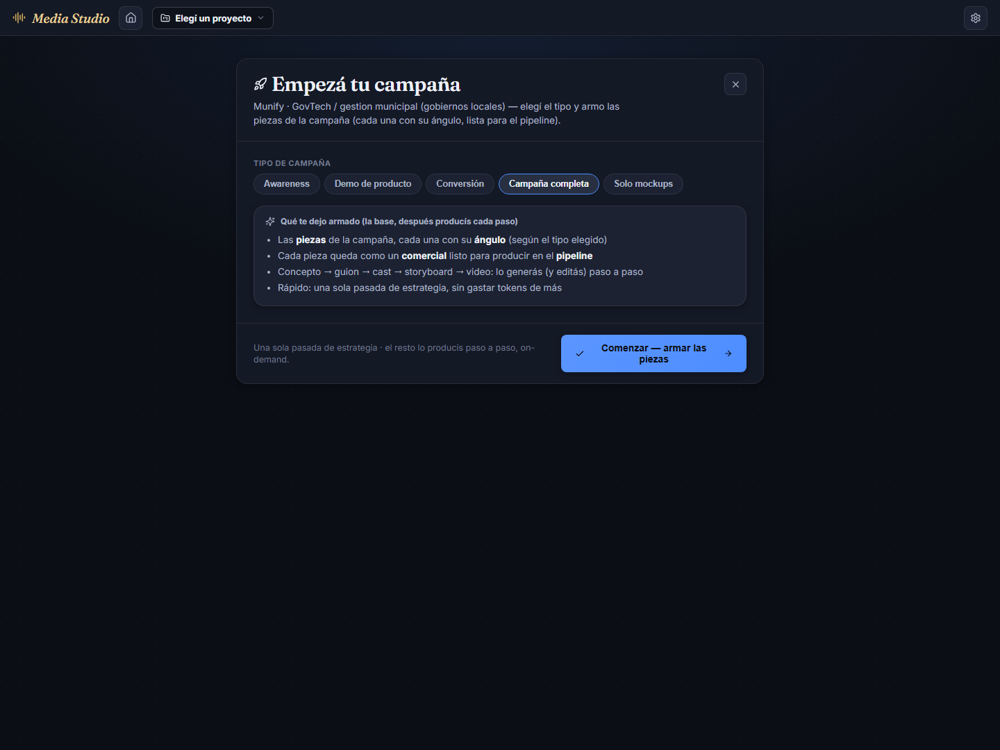
Rodaje · pie con estado (X/N escenas con clip) + CTA anclado
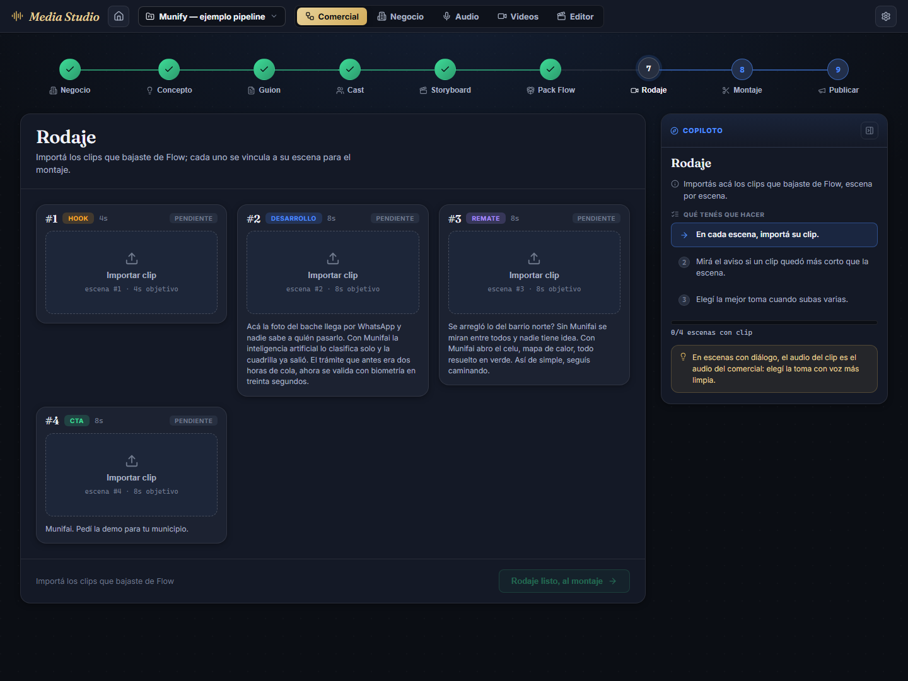
Montaje · las acciones QA/Exportar bajan al pie del panel
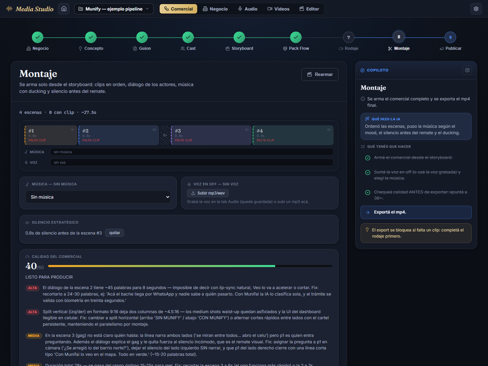
Solo presentación: en Montaje toda la lógica (armar / chequear calidad / exportar mp4 / voz en off) quedó intacta — solo se movió el markup para que la fila de acciones viva en el pie del panel y no flotando en el medio del cuerpo.
4 Línea de estado por paso (el "contexto" que faltaba) W1
Helper puro estadoDelPaso(paso, comercial) — una frase derivada del estado REAL, con 21 tests. Es la "información de contexto" que pedía el dueño, y vive anclada en el pie de cada panel.
Paso
Sin contenido
Con contenido
Concepto
Generá 2-3 propuestas para arrancar
1 propuesta · elegiste una
Guion
Generá el guion por bloques
N bloques · ~Xs totales
Cast
Generá los personajes y la locación
N personajes · locación definida
Storyboard
Generá las escenas del comercial
N escenas · ~Xs totales
Pack Flow
Generá el pack de prompts para Flow
X/N copiados · Y importados
Rodaje
Importá los clips que bajaste de Flow
X/N escenas con clip
Montaje
Armá el montaje desde el storyboard
N escenas · ~Xs · con/sin música · con/sin voz · QA X/50
Publicar
Generá el paquete de publicación
Paquete listo · N hashtags
Negocio
—
Brief de N caracteres · M pantallas
5 Elástico de verdad — responsive por contrato W3
Cuatro tiers, verificados con capturas reales (nunca scroll horizontal, nunca una isla suelta, nunca un CTA fuera del pie):
Ancho
Layout
≥ 1500px
panel (fluido) + copiloto 360px, contenedor total ~1440px centrado
1100–1500px
panel + copiloto 320px
< 1100px
el copiloto pasa ABAJO del panel; panel a columna completa
< 860px
la cabecera del panel apila (título arriba, acción abajo); el pie apila (estado arriba, CTA ancho completo)
1600px · copiloto 360 · total centrado
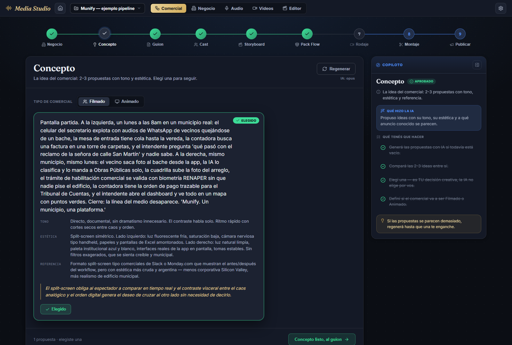
1280px · copiloto 320
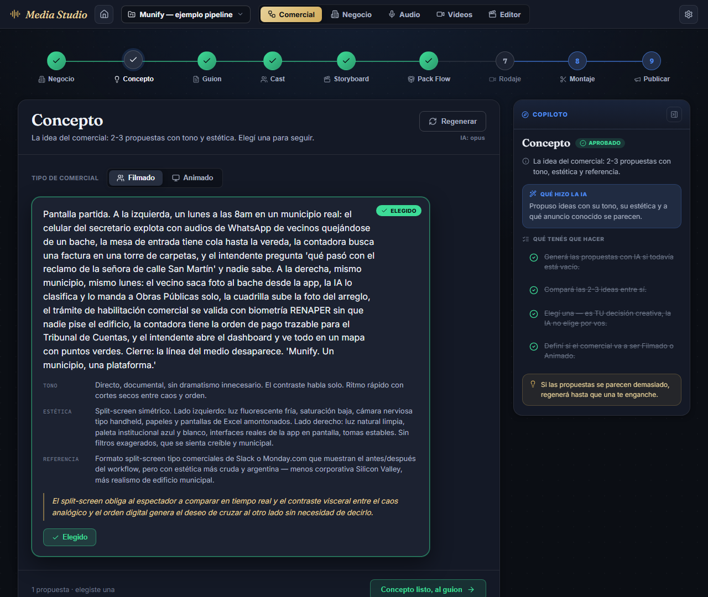
1024px · copiloto ABAJO · panel full
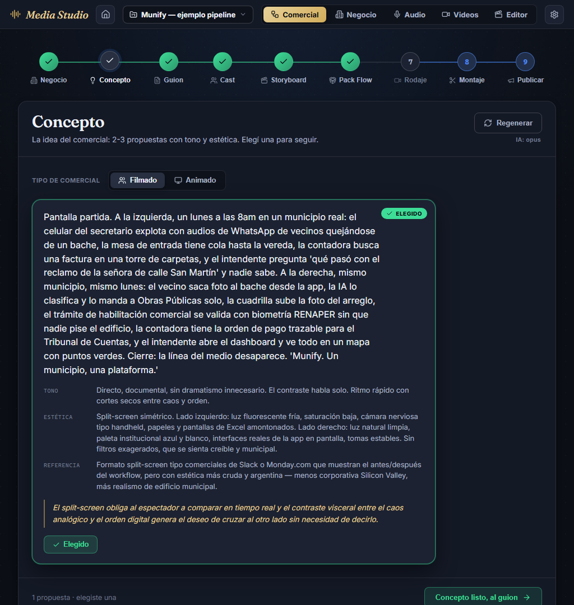
820px · cabecera apila (título + acción full)
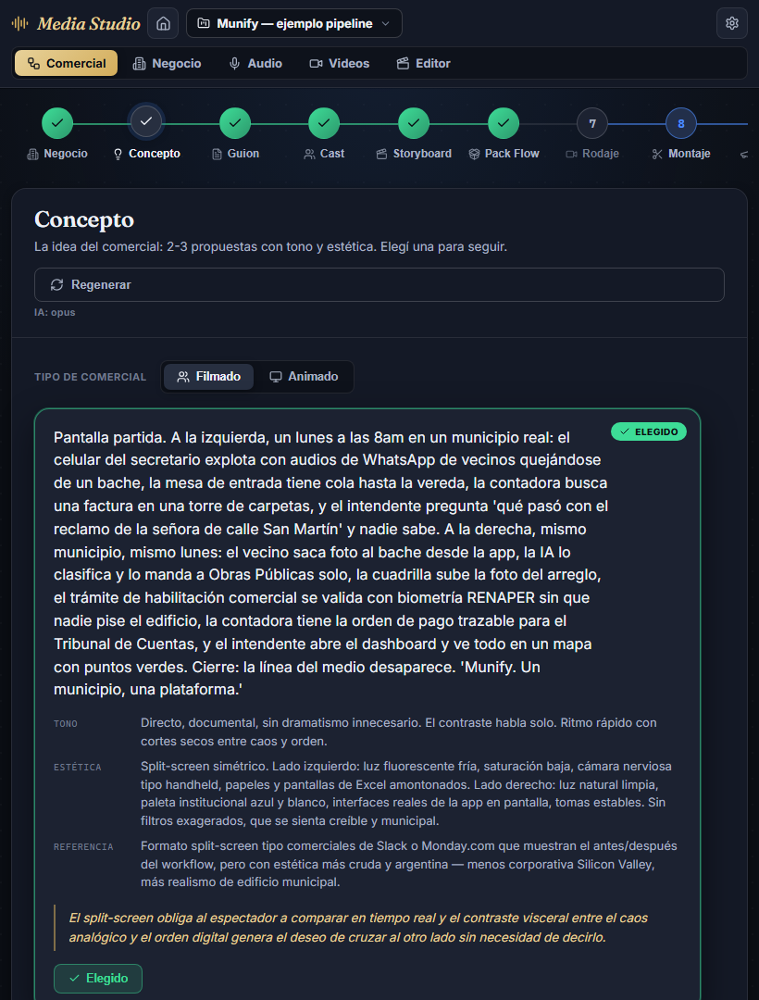
6 Gates + un fix de build de yapa calidad
Todo verde, leyendo la salida COMPLETA (no el tail). Como parte del gate se destrabó un problema de build preexistente ajeno al scope (≤5 líneas): el <style> inline de index.html gatillaba el race html-inline-proxy de Vite y volvía el build NO determinístico ("No matching HTML proxy module found", fallaba en árbol limpio también). Se movió el reset html,body a styles/studio.css (render-blocking igual) → build verde 5/5.
verde 5/5 · sin warnings nuevos (solo la nota preexistente de chunk-size)
Gate visual (Playwright, estados persistidos)
4 estados × 4 anchos (W1) + 4 pasos migrados × 4 anchos (W2) + 6 tiers (W3): sin islas, sin CTA sueltos, sin agujeros, sin scroll horizontal
Alcance respetado: solo presentación + un helper puro testeado. Lógica, estado, persistencia, endpoints y tests existentes: intactos. Capturas en docs/11-workspace/capturas/, commiteadas por WO.